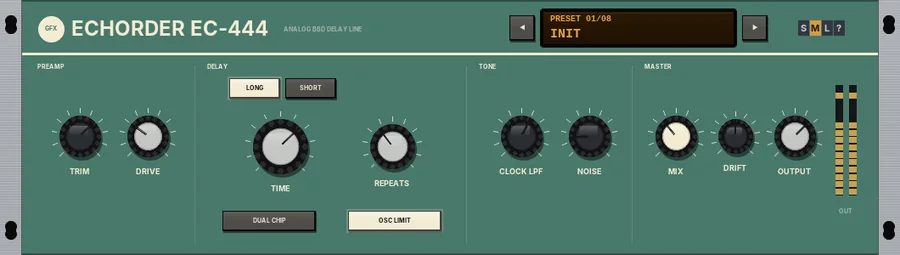

EC-444
An analogue bucket-brigade delay: warm, darkening repeats with drive in the loop.

Overview
EC-444 is a bucket-brigade (BBD) delay in the spirit of the budget analogue echo units of the late 70s and 80s. The input goes through a driven op-amp preamp, then into the delay line; every repeat passes back through the same drive and through the chip's clock filter, so the echoes get darker and grittier as they fade.
Two chips are on board: LONG gives delays from 50 to 550 ms, SHORT from 50 to 110 ms for slapback and doubling. As on a real bucket-brigade unit, turning TIME glides the delay rather than jumping, so the repeats bend in pitch while you turn it. Push REPEATS past 100% and the unit runs away into self-oscillation.
Reach for it for
- Warm, dark analogue echoes on guitars, vocals and synths
- Slapback on vocals and guitars (SHORT)
- Stereo doubling (DUAL CHIP)
- Dub-style runaway feedback and pitch bends
- Lo-fi, noisy repeats
Controls
PREAMP
- TRIM
- Input level, -24 to +12 dB.
- DRIVE
- The preamp's drive, 0 to 100% (30% by default). It saturates the input unevenly (the two halves of the wave clip differently, adding even harmonics) and also sits in the feedback loop, so each repeat is driven again.
DELAY
- LONG / SHORT
- The chip. LONG: 50 to 550 ms. SHORT: 50 to 110 ms, for slapback and doubling; TIME stays within that range.
- TIME
- The delay time. Changes glide smoothly, so the repeats bend in pitch as you turn it.
- REPEATS
- Feedback, 0 to 110% (40% by default). Above 100% the repeats grow instead of fading - self-oscillation.
- DUAL CHIP
- Runs the right side about 3% longer than the left, so the two sides' repeats fall slightly apart: a wider, doubled stereo echo.
- OSC LIMIT
- On by default. Holds the feedback in check so self-oscillation stays at a usable level instead of running away without limit.
TONE
- CLOCK LPF
- The low-pass filter on the repeats, 1 to 8 kHz (3.5 kHz by default). Because it is inside the loop, every repeat is darker than the one before. Lower it for murky, distant echoes; raise it for brighter ones.
- NOISE
- The chip's clock noise added to the repeats, 0 to 100% (15% by default).
MASTER
- MIX
- The dry / echo balance, 0 to 100% (35% by default). Up to 50% the dry signal stays at full level and the echo comes up; from 50% the dry fades out, leaving only the echo at 100%.
- DRIFT
- See Drift below.
- OUTPUT
- The output level, -24 to +12 dB.
- OUT meters
- Output level, left and right. Click them to reset the peak hold.
The header
- PRESETS
- Opens the list of factory presets (or click the preset display). Choosing one sets everything except TRIM and OUTPUT.
- ◄ / ►
- Step through the presets.
- Preset display
- Shows the preset number and name. Click it for the list.
- S / M / L
- Panel size: small, medium or large. The panel also scales to fit the plugin window.
- ?
- Opens a pop-up with the design credit, the GFX website address and the address of this manual. Click anywhere to close it.
EC-444 has no input guard and no output stage: the levels are set with TRIM and OUTPUT only.
Drift
DRIFT (0 - 100%, 50% by default) brings the unsteadiness of a real analogue unit: the chip's clock wanders, so the delay time breathes a little, and the clock filter - the tone of the repeats - slowly opens and closes. 50% is the standard amount, 100% twice that, 0 steady; the wander also speeds up as you turn it up.
Presets
- Init
- The default settings: LONG, 250 ms, 40% repeats.
- Slapback
- SHORT, 95 ms, a single faint repeat, bright.
- Dark Repeats
- LONG, 380 ms, 60% repeats through a dark 1.8 kHz filter.
- Dual Chip Doubler
- SHORT, 60 ms, DUAL CHIP on: a wide doubled sound.
- Ambient Wash
- LONG, 520 ms, 78% repeats with DUAL CHIP and more drift.
- Self-Oscillation
- LONG, 300 ms, 105% repeats and more drive: the echoes build up on their own.
- Lo-Fi Short
- SHORT, 80 ms, heavy drive, a dark filter and lots of noise.
- Clean Long
- LONG, 450 ms, little drive, a bright 7 kHz filter and very little noise.
Tips
- For dub throws, set REPEATS around 90-105% and turn TIME by hand: the repeats swoop in pitch as the delay glides.
- If the echoes get too dark too fast, raise CLOCK LPF rather than REPEATS.
- On a send, set MIX to 100% so only the echo comes back.
- Use the SHORT chip with DUAL CHIP for a quick stereo double on a mono vocal or guitar.
File: gfx-Ec444.jsfx